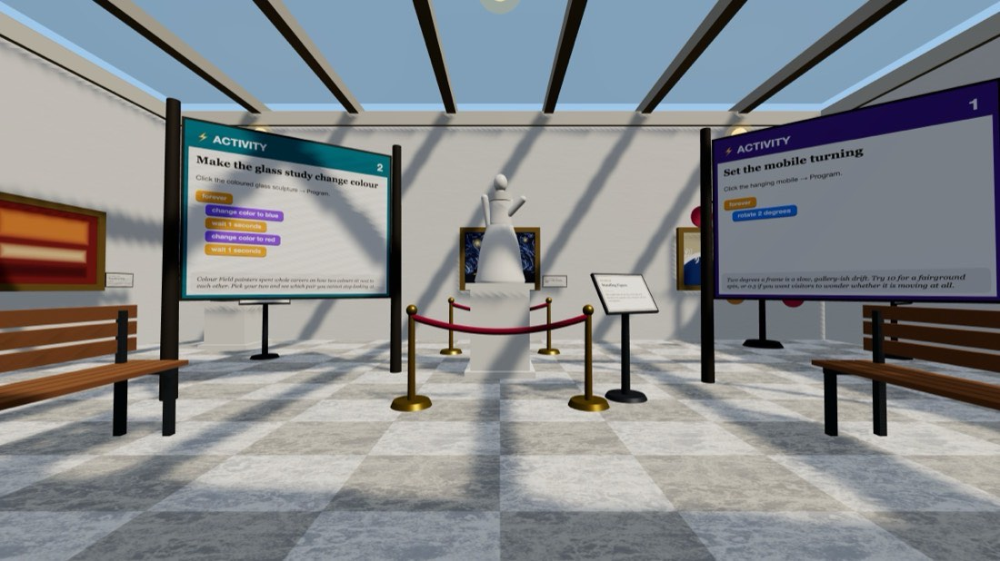
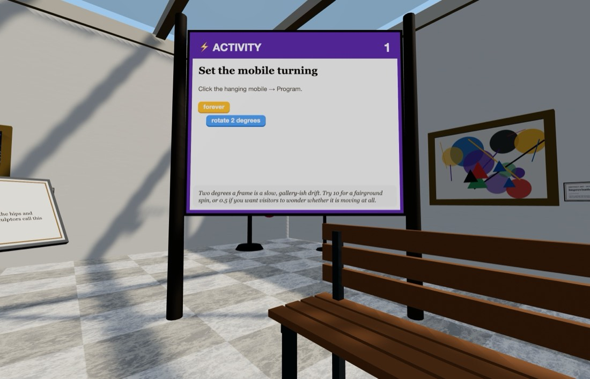
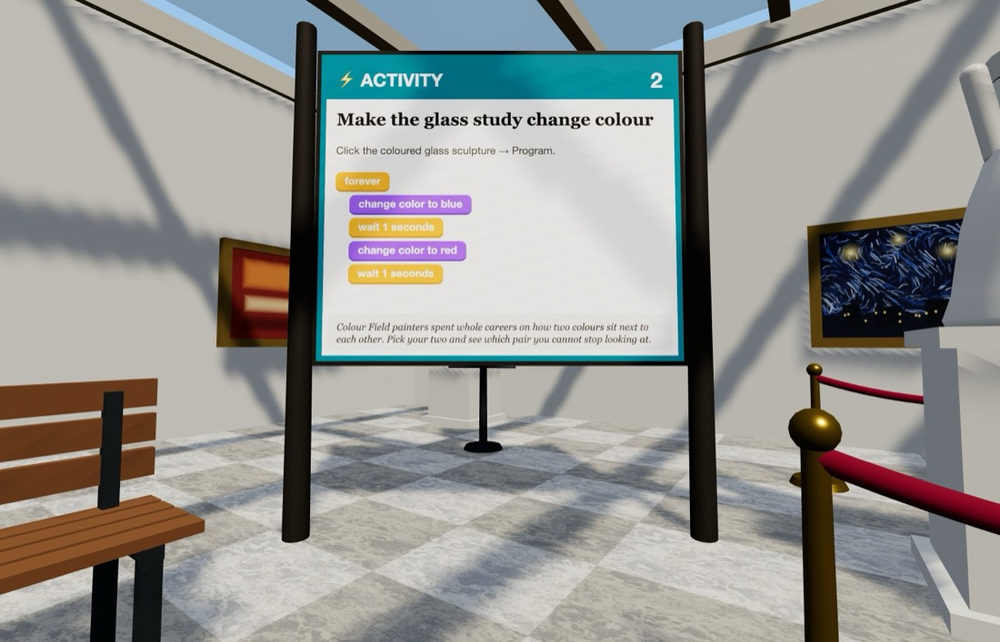

🖼️ The Museum
A skylit gallery of sculpture and painting — where one exhibit is already asking to be programmed.
Getting there: open Edusim, tap ☰ Menu → Load World → The Museum. You will be set down at the front gate. Look for the bright ⚡ ACTIVITY boards — there are two of them.



Quick starts — do these first
Both of these are printed on boards inside the world too, so you can leave this card at home. Click the object, choose Program, drag the blocks together in this order, then press Save.
Set the mobile turning
Click the hanging mobile → Program
- forever
- rotate 2 degrees
💡 Two degrees a frame is a slow, gallery-ish drift. Try 10 for a fairground spin, or 0.5 if you want visitors to wonder whether it is moving at all.
Make the glass study change colour
Click the coloured glass sculpture → Program
- forever
- change color to blue
- wait 1 seconds
- change color to red
- wait 1 seconds
💡 Colour Field painters spent whole careers on how two colours sit next to each other. Pick your two and see which pair you cannot stop looking at.
Then try these three
-
Curate your own room
Duplicate the portrait bust four times to make a row down the gallery, then give each copy a different rotate speed. Congratulations — you have made a kinetic art installation.
- repeat 4 times
- duplicate 5 ft away
-
The disappearing sculpture
Shrink a sculpture down to almost nothing, then bring it back. Watch what happens to the shadow on the floor as it goes.
- repeat 15 times
- change size by -10 %
- wait 0.15 seconds
-
Two speeds, one room
Program the rings sculpture out on the plaza to turn at a different rate from the mobile inside, then find a spot where you can see both at once. Which one looks faster? Does it still, if you walk closer to one?
- forever
- rotate 0.7 degrees
Block colours
- Control — repeat, forever, wait, when an object says, duplicate
- Motion — move forward, move up, glide, rotate, go back to start
- Looks — say, change size, set size, set opacity, change colour
One rule that catches everybody: move forward and glide follow the way the object is pointing, so a rotate in front of them genuinely steers — four sides and four 90° turns bring something back exactly where it began. move up is the exception: up is up whichever way a thing is facing.